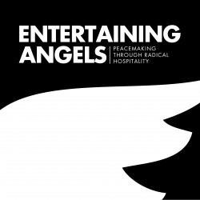
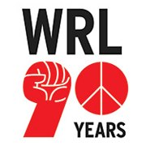
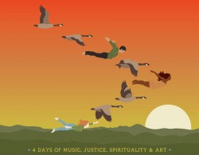
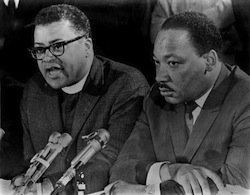
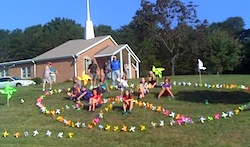

Friends,
We're excited to share four upcoming events being held by FOR allies. We hope you can join us at one or more of the following, in Washington state, Washington D.C., North Carolina and Tennessee.
Nothing near you? Check out the last event below, the International Day of Prayer for Peace, happening worldwide!
Spokane, WA: Entertaining Angels, Peacemaking Through Radical Hospitality
Beginning THIS Monday, July 15, through Saturday, July 20.
The word hospitality often brings to mind images of domestic tidiness but the gospel calls us to be radical in our welcome: to welcome the least of these as we would Christ; to seek the outcasts, the marginalized, the disempowered, the overlooked, the other; and to create community together.
This year at the Baptist Peace Fellowship annual summer conference for peacemakers, you can look forward to exciting speakers and dynamic workshops that explore topics of hospitality, inclusion and justice. We look forward to sharing spirit-filled worship with hundreds of people who work for peace as we look for ways to grow, support, and encourage each other. Participants of all ages will have opportunities for learning and for playing in community. Interpreting will be provided for Spanish-speaking participants!
Featuring International FOR Coordinator Francesco Candelari and FOR Southwest Coordinator John Lindsay-Poland.
Sliding scale: $425, $325 or $225 per person, or $45 per day for part-time attenders.
Learn more about the conference and register!
Washington, DC: "Revolutionary Nonviolence" 90th anniversary War Resisters League conference
August 1 to 4 -- registration deadline THIS Monday, July 15.
This 90th anniversary national conference is an opportunity for War Resisters League members and our allies to reflect on our past as we prepare for the future. We will strengthen our understanding of and commitment to nonviolence as a foundation for the direct action resistance we engage in. And we will address the need to open the definition of “we” as we struggle to help build the broad and diverse movement that’s waiting to be created.
Our conference will include a healthy balance of small group discussions, full conference gatherings, plenty of music, poetry and time to relax with friends old and new. Much of our time will be in workshops organized in threads -- a series of small group discussions tied together by a common theme that is a foundation of our work: Disarm, Restore, Build, Learn, and Resist. The workshops will be opportunities to delve into specifics while making links, all aimed at learning from our past, understanding our present and preparing for our future. Our aim is to be specific and focused, and at the same time we’ll make connections and weave issues together.
Our larger plenary sessions will include presentations clustered along these lines: Revolutionary Nonviolence -- What is it and how do we build it?; Global Hot Spots and Grassroots Solidarity; Unraveling the Knot of Militarism, Class, Gender and Race; Saving the Planet -- Wars, the Attack on the Environment and Global Capitalism; and The Culture of Violence.
Featuring FOR Southeast & Mid-Atlantic Coordinator Rev. Lucas Johnson.
Sliding scale: $15-25 per day, or $40-80 for the full conference. Housing fees are a fixed $35 per person per night, or arrange on your own.
Learn more about the conference and register!
Near Asheville, NC: Wild Goose Festival
August 8 to 11.
Wild Goose is a community gathered at the intersection of justice, spirituality, music and art. “Wild Goose” is a Celtic spirituality metaphor that evokes unpredictability, beauty, and grace. We take inspiration from this concept, as well as many events such as Greenbelt, Burning Man, the Iona Community and SXSW.
We invite you to join us. We welcome you to talk, listen, eat and camp together with us as equals, captivated and challenged by the call of radical humanity, and who seek to celebrate diversity and promote the common good.
Featuring FOR Southeast & Mid-Atlantic Coordinator Rev. Lucas Johnson, FOR Director of Communications Ethan Vesely-Flad, and FOR Chicago Coordinator Rev. Sam Smith.
Registration is $199 per adult. Lower rates for those under 18, and 20% off for current students.
Learn more about the festival and register!
Nashville, TN: The James Lawson Institute
An Eight-Day Experience in Strategic Evaluation of Nonviolent Civil Resistance
August 17 to 24 -- registration deadline THIS Monday, July 15.
In the 1960s, the Reverend James Lawson organized and led one of the most effective campaigns of nonviolent civil resistance in the 20th century: the Nashville lunch counter sit-ins for the US Civil Rights Movement. In the years that followed he was involved in strategic planning of numerous other major campaigns and actions and was called “the mind of the movement” by Dr. Martin Luther King, Jr.
The US Civil Rights Movement, the US Labor movement in the 1930s, the woman’s suffrage movement, and other movements both in North America and abroad in the decades since did not just engage in activism. They organized people, mobilized them by the millions, and galvanized participation from a broad cross section of society. Collectively, these movements provide a model for how nonviolent change can be organized to win rights, justice and change in very adverse conditions.
The James Lawson Institute looks at these past movements, and numerous contemporary ones, from a strategic perspective, and engages participants in depth about a wide variety of aspects of organizing and activism in North America.
Sessions will be facilitated by James Lawson and the advisors and staff of the International Center on Nonviolent Conflict.
Registration is $100 for organizers, activists and individuals not institutionally affiliated; $200 for individuals with Nashville-area nonprofit and educational organizations; $350 for individuals with national nonprofit organizations and foundations; and $500 for individuals employed by media, commercial or government organizations. Needs-based travel scholarships are available.
Learn more about the institute and register!
Worldwide: International Day of Prayer for Peace
Saturday, September 21.
The United Nations first recognized an annual Day of Peace in 1981. It was fixed on September 21 in 2001. In 2004, the World Council of Churches began recognizing September 21 as an International Day of Prayer for Peace.
On Earth Peace, FOR, and the United Church of Christ Justice and Witness Ministries office would like to invite your participation this year. Our campaign has emerged as one of the main international initiatives calling communities of faith to pray and act for peace on September 21. In 2012, our campaign motivated 170 groups in 15 countries, with 15 different traditions involved.
Following the lead of Peace One Day, which has risen as a major promoter of September 21 internationally, our theme for this year is "Who Will You Make Peace With?" As part of the global movement, our campaign specifically invites people to pray and act for peace on that day or sometime in the surrounding week.
Learn more about the event and get involved! |